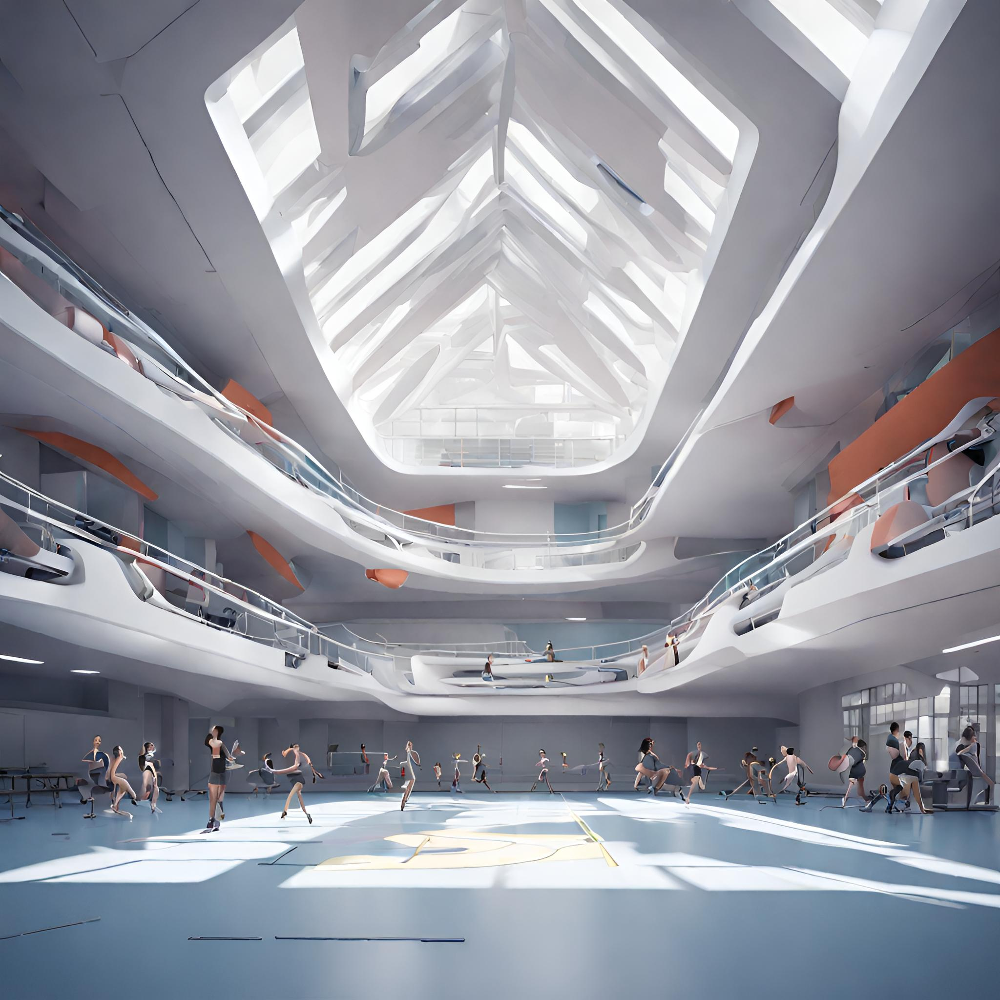

Colegio Gamer Rex
Instalaciones
Imagen del Gimnasio

-
Cursillo de Introducción a la Programación de Videojuegos
Descripción: Este cursillo brinda una introducción básica a la programación de videojuegos utilizando un lenguaje de programación como Python o C#. Los estudiantes aprenderán los fundamentos de la lógica de programación y cómo aplicarlos en el desarrollo de videojuegos.
Horario: Dos veces por semana, 1 hora por sesión.
-
Club de Arte Digital y Animación
Descripción: En este club, los estudiantes explorarán técnicas de arte digital y animación para aplicar en la creación de personajes, escenarios y efectos visuales para videojuegos. Se utilizarán herramientas como Photoshop, Blender o Adobe Animate.
Horario: Una vez por semana, 2 horas por sesión.
-
Taller de Diseño de Niveles
Descripción: En este taller, los estudiantes aprenderán los principios fundamentales del diseño de niveles para videojuegos. Explorarán conceptos como la progresión de dificultad, el flujo del jugador y la creación de experiencias de juego emocionantes.
Horario: Una vez por semana, 1.5 horas por sesión.
-
Cursillo de Creación de Música para Videojuegos
Descripción: Este cursillo se centrará en la composición de música y creación de efectos de sonido para videojuegos. Los estudiantes aprenderán a utilizar software de producción musical como Ableton Live o FL Studio y explorarán técnicas para crear una atmósfera sonora envolvente.
Horario: Dos veces por semana, 1 hora por sesión.
-
Club de eSports
Descripción: Este club está destinado a estudiantes interesados en competir en videojuegos populares en formato de equipo, como League of Legends, Counter-Strike: Global Offensive, o Rocket League. Se organizarán prácticas, torneos internos y participaciones en eventos locales.
Horario: Dos veces por semana, 2 horas por sesión (varía según la disponibilidad de torneos y prácticas).
-
Taller de Realidad Virtual
Descripción: Los estudiantes explorarán el mundo de la realidad virtual (VR) mediante el uso de dispositivos como Oculus Rift o HTC Vive. Aprenderán los conceptos básicos de desarrollo de aplicaciones y experiencias interactivas en VR.
Horario: Una vez por semana, 1.5 horas por sesión.
-
Club de Podcasts y Streaming
Descripción: En este club, los estudiantes aprenderán sobre producción de contenido de videojuegos a través de podcasts y transmisiones en vivo (streaming). Explorarán técnicas de narración, edición de video y gestión de comunidades.
Horario: Una vez por semana, 2 horas por sesión.